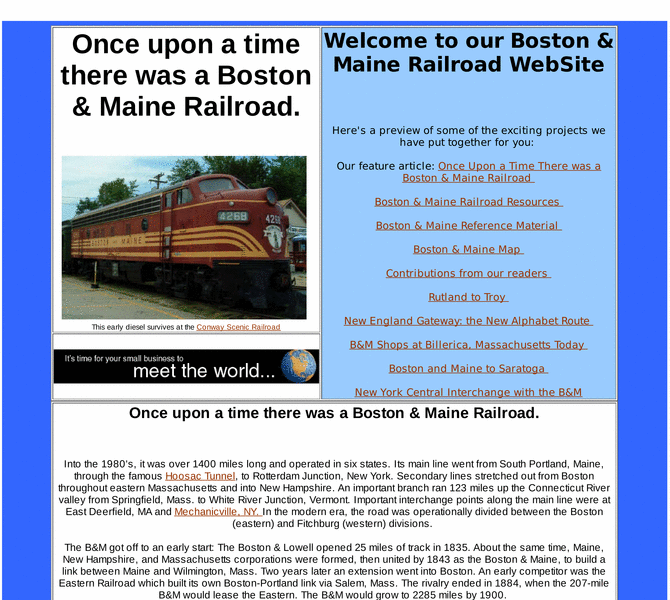

Previewing: Once upon a time there was a B&M Railroad. Previewing: Once upon a time there was a B&M Railroad. 
Use the left/right red arrow controls to navigate through this ring - Click the preview image to visit the member site.

All about the Boston & Maine railroad. Where it went; when it was built; what happened to it. Into the 1980's, it was over 1400 miles long and operated in six states. Its main line went from South Portland, Maine, through the famous Hoosac Tunnel, to Rotterdam Junction, New York.
Once upon a time there was a B&M Railroad. owned by:
 king5021 king5021
A member of the original webring since 01/31/2011.
|
|